Yakumo
Yakumo · Hokkaido
Yakumo
Highlighted on the Hokkaido map.
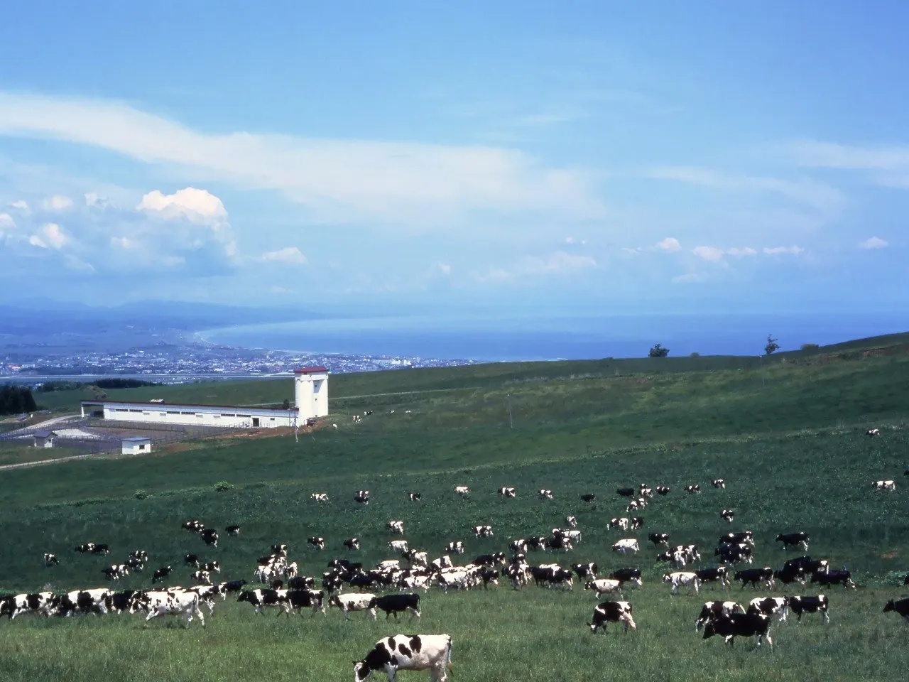
Stay
旅館 二海
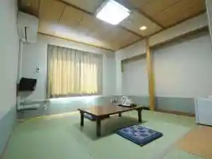
Ryokan Futami
温泉ホテル 八雲遊楽亭
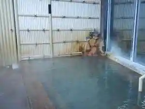
Onsen Hoteru Yakumo Yuuraku Tei
八雲温泉 おぼこ荘
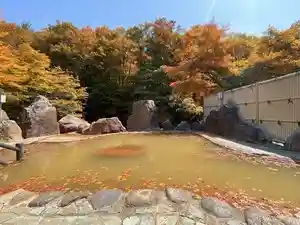
Yakumo Onsen Oboko Sou
パシフィック温泉ホテル清龍園
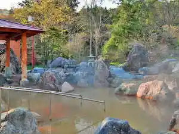
Pashifikku Onsen Hoteru Kiyoshi Ryuuen
見市温泉旅館
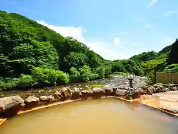
Ken Shi Onsenryokan
熊石ひらたない荘
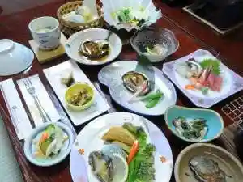
Kumaishi Hiratanai Sou
Dining
ハーベスター八雲
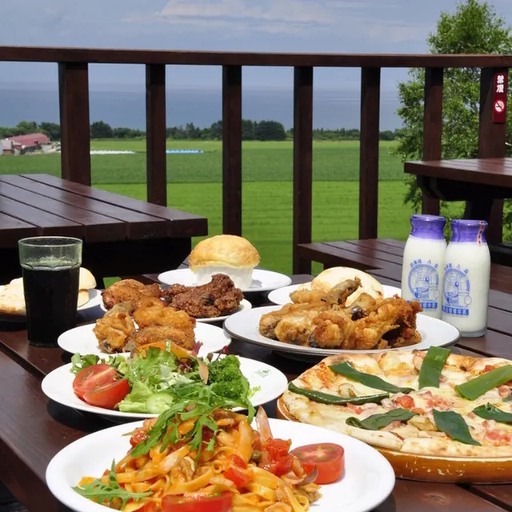
Haabesutaa Yakumo
エルフィン 元山牧場牛乳
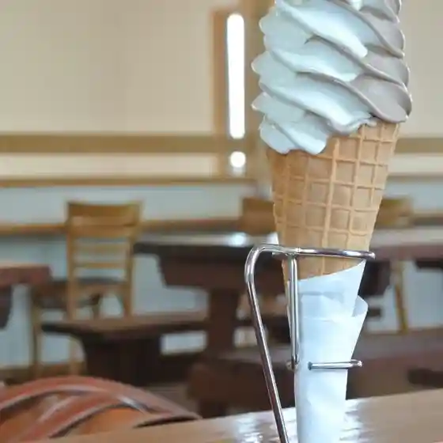
Erufin Motoyama Bokujou Gyuunyuu
焼肉富士
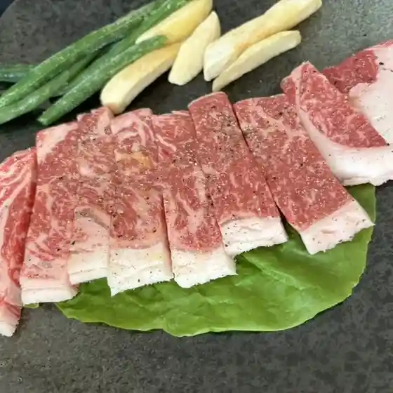
Yakiniku Fuji
そば処権平
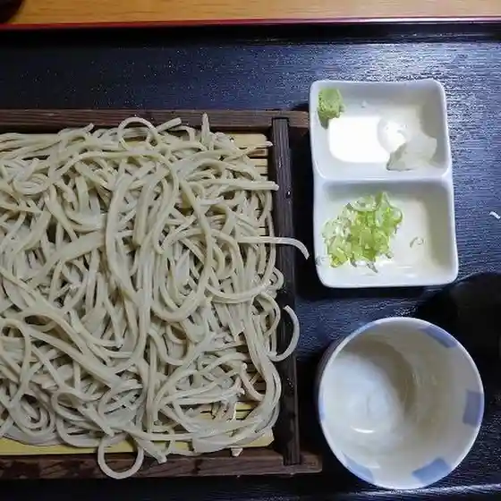
Soba Tokoro Ken Taira
ログの宿たか木

Rogu No Yadota Ka Ki
くら屋菓子舗
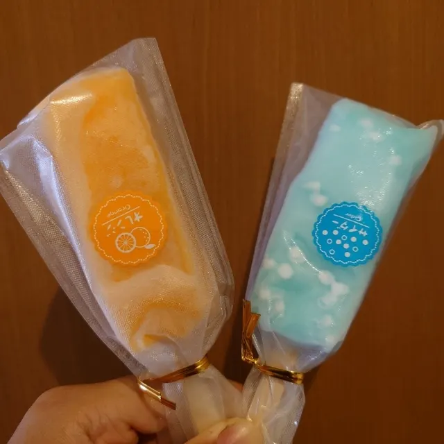
Kura Ya Kashi Ho
LAWSON 八雲町本町店
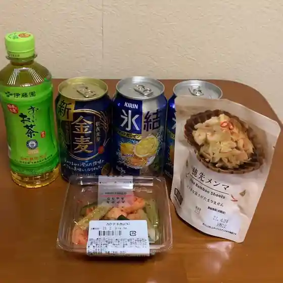
Lawson Yakumo Machi Honchou Mise
ファーマーズマーケット ミルクの郷 八雲

Faamaazumaaketto Miruku No Sato Yakumo
孔雀
Kujaku
夢ある街のたいやき屋さん ハーベスター八雲店
Yume Aru Machi Notaiyaki Ya San Haabesutaa Yakumo Mise
セブンイレブン 渡島八雲本町店
Sebun'Irebun Watarishima Yakumo Honchou Mise
松月焼肉ホルモン
Matsuzuki Yakiniku Horumon
服部醸造
Hattori Jouzou
パシフィック温泉ホテル 清龍園
Pashifikku Onsen Hoteru Kiyoshi Ryuuen
むつごろう
Mutsugorou
ミノリ商事
Minori Shouji
熊石深層水株式会社
Kumaishi Shinsou Mizu Kabushikigaisha
SLOW CAFE
Slow Cafe
縁
Heri
見市温泉旅館
Ken Shi Onsenryokan
レストラン セントー
Resutoran Sentoo
金太郎
Kintarou
マルナカ旅館
Marunaka Ryokan
古沢商店
Furusawa Shouten
Sights
Yakumo Ikuseibokujo Lookout
Yakumo Ikuseibokujo Lookout
Oto Resort Yakumo
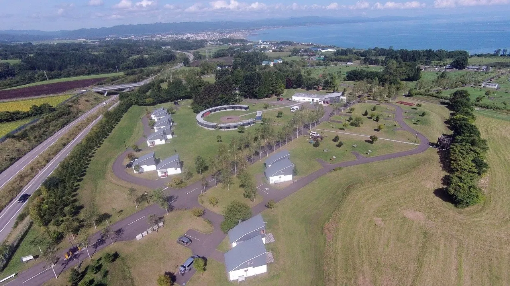
Oto Resort Yakumo
Habesuta Yakumo
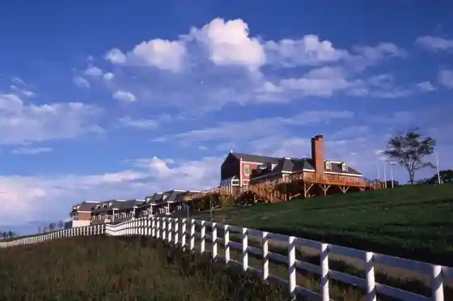
Habesuta Yakumo